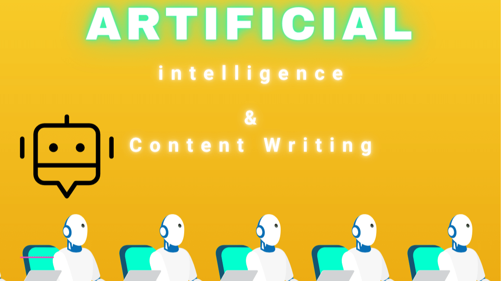

AI辅助编程最佳实践指南
1. 选择合适的AI辅助编程工具
市面上有多种AI辅助编程工具，如GitHub Copilot、CodeGeeX、Cursor、CodeWhisperer等，它们支持多种编程语言和开发环境。选择工具时需考虑以下因素：
- 适用场景：例如，GitHub Copilot适合代码补全和生成，而Cursor则在调试和重构方面表现突出。
- 功能需求：根据项目需求选择具备代码生成、测试生成、注释生成等功能的工具。
- 兼容性：确保所选工具与开发环境（如IDE、编辑器）兼容。
2. 合理使用AI生成的代码
AI生成的代码可以作为起点，但不应完全依赖：
- 审查与测试：仔细检查AI生成的代码，确保其符合项目需求和编码规范。
- 优化与调整：利用AI生成的代码作为参考，结合自身经验进行优化和调整。
- 学习与理解：通过分析AI生成的代码，提升自己的编程能力和技术理解。
3. 制定明确的提示词
为了提高AI生成代码的成功率，需要提供清晰、具体的提示词：
- 明确功能需求：详细说明需要完成的功能和业务逻辑。
- 上下文信息：提供足够的上下文信息，包括相关代码片段和项目背景。
- 分解任务：将复杂任务分解为小步骤，逐步完成。
4. 优化开发流程
AI辅助编程可以显著提高开发效率，但需结合良好的开发流程：
- 版本控制：使用Git等工具进行版本管理，方便代码协作和回溯。
- 模块化设计：将代码划分为模块，提高代码的可读性和可维护性。
- 持续学习与反思：定期总结AI辅助编程的经验，调整学习计划和开发策略。
5. 注意AI工具的局限性
尽管AI辅助编程工具功能强大，但仍存在一些局限性：
- 逻辑错误与风格不一致：AI生成的代码可能包含逻辑错误或不符合项目编码风格。
- 依赖性问题：AI工具可能推荐过时的库或语言使用，需谨慎选择。
- 复杂逻辑处理能力有限：对于复杂的业务逻辑或跨类依赖关系，AI工具可能无法完全满足需求。
6. 结合人类智慧与AI能力
AI辅助编程并非完全取代人类程序员，而是作为辅助工具：
- 人类程序员的角色：程序员应专注于高层次问题解决、架构设计和创新性工作。
- AI作为助手：利用AI工具提高编码效率和准确性，但需保持对代码质量的最终控制。
7. 持续探索与适应
AI辅助编程是一个不断发展的领域，开发者应保持学习和适应：
- 关注最新进展：了解AI辅助编程工具的最新功能和改进。
- 灵活应用不同模式：根据开发任务的不同需求，灵活切换AI辅助编程模式（如聊天模式、实时辅助模式等）。